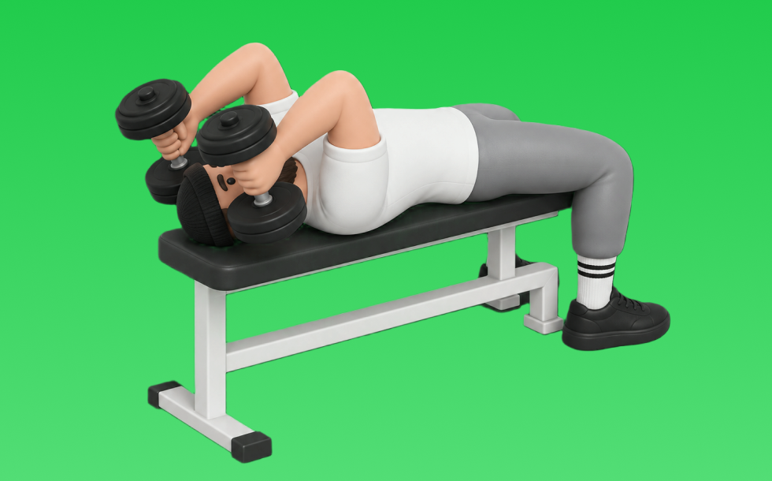

ダンベルライイングトライセプスエクステンション

ダンベルライイングトライセプスエクステンションとは、ダンベルを使ってベンチに仰向けで「肘を伸ばす」動作で腕（上腕三頭筋）を鍛える種目です。肘を固定して深くストレッチを得やすいのが特徴で、額の横へ下ろして押し戻す動作を繰り返します。二の腕の厚みづくりやプレス系の補強が期待できます。
- 対象部位
- 腕
- 器具
- ダンベル
- 記録形式
- 重量・回数
- 別名
- ダンベルスカルクラッシャー / ライイングダンベルトライセプスエクステンション / dumbbell lying triceps extension / dumbbell skull crusher
YouTube動画
-
【ダンベル】上腕三頭筋を効果的に鍛えるトライセプスエクステンションのやり方！フォームのポイントやバリエーション等を徹底解説
-
上腕三頭筋のトレーニング ｜ ダンベル・トライセプスエクステンション
-
【腕トレ】ダンベルで腕を太くする上腕三頭筋を鍛える筋トレメニュー
-
【ダンベルのみ上腕三頭筋3選】腕の太さを出す種目はコレだ！
-
ダンベルライイングトライセプスエクステンション（Dumbbell Lying Triceps Extension）のやり方とフォーム
-
【１分で解る筋トレ解説】ダンベルライイングエクステンション【筋トレライブラリー】
-
上腕三頭筋が最近大きくなったトライセプスエクステンションのやり方をご紹介！基本フォームや変更点を解説＆実演
-
剛腕を作る最重要種目！？手のひらの○○にバーを収めよ！極意解説トライセプスエクステンション
-
【初心者】ライイング・トライセップス・エクステンションの効果的なやり方 | 上腕三頭筋に効きまくる【ビーレジェンド プロテイン】
-
【横川尚隆３】上腕三頭筋が一番デカくなる種目＆ポイント徹底解説です。
-
トライセプスエクステンションの効果的なやり方
-
【筋トレ】ライイングトライセップスエクステンション解説講座 〜上腕三頭筋を鍛える〜【フォーム】【初心者】
-
【腕トレ/三頭筋】腕を太くする、ライイングトライセプスエクステンション！初心者向け【山岸秀匡】
-
二の腕に効かせる｜DBライイングトライセプスエクステンション
-
上腕三頭筋を鍛える筋トレ「ライイングダンベルトライセップスエクステンション」の正しいやり方【10回×3セット】
-
【筋トレ入門】第6回 腕を鍛えるなら「ライイングトライセプスエクステンション」
-
【筋トレ】肘が痛みにくいライイングエクステンションのやり方！【上腕三頭筋】
-
【筋トレ】上腕三頭筋を鍛えるポイントとは
-
ワンハンドダンベルエクステンション【ジュラシックトレーニングメソッド】
-
「トライセプス・エクステンション」のやり方教えて！！
-
【トライセプスエクステンション】肘を痛めず三頭筋に効かせるやり方のコツを解説
-
【腕トレ】腕を太くするバーベルカール/ライイングエクステンションのやり方を解説
-
【一撃で】上腕三頭筋をデカくする！ライイングトライセプスエクステンション徹底解説
-
【初心者向け】トライセプスエクステンションの正しいフォーム
-
【腕】極太の腕を作るライイングエクステンション徹底解説
YouTubeショート
-
バーベルライイングトライセプスエクステンション（Barbell Lying Triceps Extension）のやり方とフォーム
-
本当に正しいライイングエクステンションのやり方
-
ダンベルトライセプスエクステンション（Dumbbell Triceps Extension）のやり方と基本フォーム
-
持田選手直伝のフレンチプレス。実はフォームが大事 #トレーニング #筋トレ #volix
-
腕を太くする！ライイングトライセプスエクステンション！名前長い！w #筋トレ
-
インクライン・ライイングトライセプス・エクステンションの正しいやり方 | ボディビル日本チャンピオンが解説 #shorts【ビーレジェンド プロテイン】
-
これ知ってる人は筋トレガチ勢💪🥺#フレンチプレス #腕トレ #筋トレ #フィットネス #ワークアウト
-
成長を実感したライイングエクステンションのやり方※エゴまみれ
-
【筋トレ】ライイング・トライセップス・エクステンションのフォームのポイント #shorts 【ビーレジェンド プロテイン】
-
先生! 腕が太くなるおすすめの種目は？ ＃Shorts #助けて山本先生 ＃筋トレ大学
-
【上腕三頭筋】ライイングエクステンションで僕が意識したこと#筋トレ#宅トレ#二の腕#ボディビル
-
ライイングトライセプスエクステンション
-
三頭筋をデカくする必須種目【ダンベルスピネイトオーバーヘッドエクステンション】#筋トレ#腕トレ#パーソナルトレーナー
-
【よくある間違いスカルクラッシャー】 #筋トレ #ダイエット #新座市 #志木市 #朝霞市 #大泉学園 #東久留米 #パーソナルジム #スカルクラッシャー
-
横川尚隆 腕トレ(三頭筋)オーバーヘッドトライセプスエクステンション【切り抜き】#shorts
-
みなさんはオーバーヘッドエクステンションやってますか？持田選手がしっかり効くトレーニングをレクチャーしてくれました！#volix #腕トレ #ちょこっとおしい #上腕三頭筋 #volixgear
-
正しいフレンチプレスのやり方 | ボディビル日本チャンピオンが解説 #shorts 【ビーレジェンド プロテイン】
-
かっこいい腕を作る腕トレ3選#shorts #youtubeshorts #筋トレ #腕トレ #ジム #トレーニング #筋トレ大学 #筋肉博士
-
【ライイングエクステンション】肘を痛めない正しいフォーム解説
-
上腕三頭筋をデカくしたいならこの種目がオススメ💪 #筋トレ #筋肉 #トレーニング
-
【腕トレ！初心者🔰】上腕三頭筋を怪我なく効率的に鍛えるライイングエクステンション！
-
【二の腕引き締めの為の重要ポイント💡】ライイングトライセプスエクステンション編 #shorts
-
ライイングトライセプスエクステンション #筋トレ #ボディメイク #パーソナルトレーニング #ストレッチ #腕トレ#腕トレーニング#上腕三頭筋
-
ダンベルトライセプスエクステンション
-
【ダンベル】極太の腕を作る最強三頭筋トレーニング4選！ #shorts
動作方法
- 肘を固定し、肩の力みを減らす
- 狙う部位で押し切る
- 可動域を保って戻す
動作ポイント
- 肘を開きすぎない
- 肩をすくめない
ワンポイントアドバイス
- 肘の位置を固定すると狙った部位に効きやすい
- 回数を急がず、下ろし動作を丁寧に行う
目的別回数設定
目的や体力に応じた一般的な目安です。無理のない範囲で調整してください。
- 筋力アップ
- 1〜5回
- 筋肥大
- 6〜12回
- 持久力アップ
- 13〜20回
YouTube動画について
動画はYouTubeの公開情報をもとに表示しています。内容は投稿者によるもので、Biggrによる監修ではありません。
アプリを入手
筋トレやトレーニングの記録はBiggrにお任せください。今すぐ無料で使い始められます。